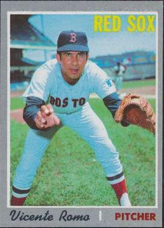

The Worcester Red Sox (aka the WooSox) will be holding Prostate Cancer Awareness Night on Tuesday, August 19. Ed Randall’s charity, Fans for the Cure, will be visiting Polar Park for the second consecutive year to throw out the first pitch and join in the NESN regional broadcast to make viewers aware of the importance of early detection of the disease.
Should anyone from the BLOHARDS wish to attend, please contact Fans for the Cure at info@fansforthecure.org. More details will be shared in the upcoming weeks as they become available.
Voted by several outlets as the #1 ranked Minor League team for its overall management, the WooSox provide a Major League experience in a low-key and friendly atmosphere and in a ballpark that is among the country’s best.
The end of baseball season leaves a gaping hole in NESN’s broadcast schedule. The network does the best it can. Herewith the program guide for the evening of February 9, 2025…
7:00 Mission Impossible A recap of Dominic Smith and Romy Gonzalez’s attempts to fill in for Tristan Casas after the latter’s 2024 season-ending injury.
8:00 Password An intimate look at the life of Red Sox prospect Jhostynxon Garcia. In this episode, Garcia, for the third time, is required to return checks to his bank due to the misspelling of his name.
9:00 Storage Wars In competition with other MLB executives, Red Sox General Manager Craig Breslow maneuvers to purchase the contents of abandoned storage units sight-unseen. Tonight, Breslow heads to Vegas and returns with utility player Abraham Toro and a leaky ice bath.
10:00 Cheaper By the Dozens, Episode 6: Moving fast to cover a lot of ground, NESN’s crack analytics squad provides insights into the Sox’ roster of major league outfielders. This episode focuses on players names beginning with the letters Q – Re.
Greetings, BLOHARDS, Red Sox fans, beisbol lovers, and all the ships at sea. Your ole buddy Vicente Romo is back with more mullings and musings – “El Huevo” style:
Amigos, we are living in highly interesting times in Red Sox Nation. Thanks to a 10-game winning streak – in which the Rockies and Nationals played the role of the Washington Generals – the Sox sit at 55-49 and are in a logjam for one of the AL wild card slots.
When Raffy was told “Not so fast” as he was boarding the team charter bound for Seattle on June 15, the assumption was that the 37-36 Sox were waving the white flag on the 2025. But guess what – they came out of the All-Star break the hottest team in MLB. A sadistic schedule-maker (Cubs, Phillies, and now the Dodgers) may have slowed the juggernaut a bit. But still, the boys are in the race.
Yay or nay on the Savannah Bananas? Enrique not a big fan, except for calling outs when spectators catch foul balls on a fly? That is a rule MLB needs to adapt. Yesterday….The real Breakfast of Champions is Grape Nut Flakes and a box score….Devers ranks among Boston’s biggest breakups – up there with Brady to Tampa, Babe Ruth to Yankees, Clemens to Blue Jays, Fisk to White Sox, Mookie to Dodgers, Ben Affleck and J. Lo from one another (2x)….Can cellphones call 411? Asking for a friend….Sox are 18-13 (as of July 24) since Devers to Giants….As someone said, Raffy performing in SF like a Dunkin’ gift card with 38 cents left on it….Anybody see the Bobby Dylan movie? The actor’s voice was uncanny. Catch it on American Airlines…..Speaking of, you get the full 12 oz. cans on American, the miniature 8 oz. cans on Alaska Air. Just sayin’……Used to love the press box at the old Comiskey Park. Although two of the chefs never wore gloves….What a strange way to a walk-off loss – on catcher’s interference! Bases were loaded with no outs, so the odds were against getting out of the inning. But it looked like the batter stepped back and aimed for the catcher’s glove….By the way, swinging at the glove is exactly what Enrique would have done when facing a 100 mph blur….According to Will Jennings on WEEI, Shaw’s is the only place to shop, especially for celery….The hottest-selling Red Sox jersey of them all? Not Ted Williams, Jimmy Foxx, Johnny Pesky, Yaz, or Big Papi. It’s Jarren Duran’s no. 16, currently 12th among all MLB jerseys, making him the only current Red Sox player in the MLB Top 20…If anything, Garrett Crochet has been underrated. You heard me….Sox are 5th in AL in runs scored, 9th in MLB in run differential. Can you say “Probably good enough for expanded wild card”?....I still love the story from 2021 where Bo Bichette hit a Fenway HR that landed outside the building that once housed Gold’s Gym, where his parents had met in the summer of 1991….Ed Randall’s show Remember When can be found on SiriusXM on MLB Network Radio….Is Enrique the only one who believes the BLOHARDS should do a podcast? (Quite possibly!) Maybe one a month – enough to be in the game and have a few laughs.
Two thirds of the earth is covered by ocean. The rest is covered by Ceddanne Rafaela.
Disappointing Sox pitcher Walker Buehler has given up 35 free passes in 78 innings. You can’t say you weren’t warned.
On a somewhat related note, “Aroldis” means “lockdown ninth inning guy” in Serbo-Croatian. Maybe there’s something to this nominative determinism thing.
Do you think the Astros would give us Christian Vasquez back for Wilyer Abreu?
Who makes less – Garett Crochet’s barber or Pablo Sandoval’s trainer?
get to the hospital. You’re suffering from heat stroke.
After exhaustive investigation, the BLOHARDS can confirm that there was more to Rafael Devers’ departure than has heretofore been reported. While it is true that Devers was unhappy both being benched as third baseman and then being asked to play first, sources close to the player have told us the breach only became irrevocable in early June when, in quick succession, the Sox asked Devers to sell hot dogs in the stands on days when he wasn’t in the lineup, and then requested that he serve as an intern in the team’s analytics department. Devers is said to have been particularly irritated by the latter request inasmuch as he hadn’t performed any linear programming in several years and it was unlikely that his skills… (see Devers, p.4)